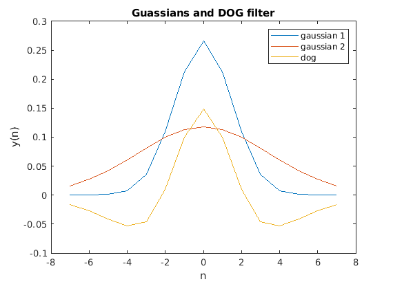
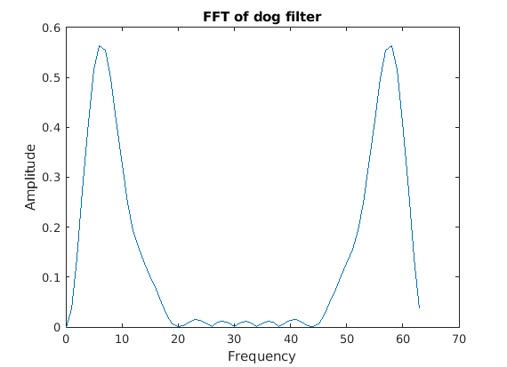
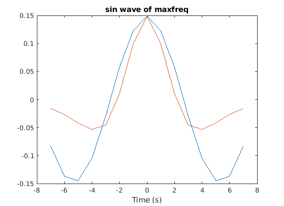

Contents
clear; clc; close all;
a)
sig1 = 1.5; sig2 = 3.5; n = linspace(-max(sig1, sig2)*2, max(sig1, sig2)*2, 15); G1 = exp(-(n.^2)/(2*sig1^2)); % Creating a Gaussian of sigma = 1.5 G2 = exp(-(n.^2)/(2*sig2^2)); % Creating a Gaussian of sigma = 3.5 % Normalizing the Guassians so that they sum to 1 G1 = G1/sum(G1); G2 = G2/sum(G2); dog = G1-G2; % Computing the difference of gaussians plot(n, G1, 'DisplayName', 'gaussian 1'); hold on; plot(n, G2, 'DisplayName', 'gaussian 2'); plot(n, dog, 'DisplayName', 'dog'); xlabel('n') ylabel('y(n)') title('Guassians and DOG filter') legend()
F_dog = fft(dog, 64); % Computing fft of the dog filter F_dog_amp = abs(F_dog); % Computing the amplitude of the filter figure(); freq = 0:length(F_dog) - 1; plot(freq, F_dog_amp); xlabel('Frequency') ylabel('Amplitude') title('FFT of dog filter')
From the fft, we can see that the filter has a high value for a range of frequencies and is close to 0 at other frequencies. Therefore, this is a band-pass filter that allows frequencies between 0 - 20 Hz to pass through.
b)
The maximum amplitude will be obtained for the sinusoid that has frequency at the peak of the F_dog_amp. We can see that the max of F_dog_amp has a peak at 6 Hz and hence the sinusoid that will produce the maximum frequency will be the one of 6 Hz.
[maxamp, maxfreq1_ind] = max(F_dog_amp); maxfreq_ind = maxfreq1_ind -1; maxfreq = maxfreq_ind / 64;
The period of the sinusoid is the inverse of the frequency.
period = 1/maxfreq;
Creating the sinewave of maxfreq:
sine_wave = cos(2 * pi * n * maxfreq); figure() plot(n, sine_wave * max(dog)); hold on; plot(n, dog) xlabel('Time (s)') title('sin wave of maxfreq')
We can see here that the osciallations in the filter matches those in the sinewave.
The frequency of sinusoids that will produce 25% of the amplitude are the ones that are 25% of the maximum amplitude of fft of dog. This can be computed by subtracting 25% of the maximum amplitude from the F_dog_amp_half and then computing the absolute value. This will basically compute the difference in the amplitudes of F_dog_amp_half from each of the other amplitudes. The absolute value will ensure that the difference is kept positive. We can then sort the absolute differences and the first two values of the F_dog_amp_half will be the amplitudes with 25% of the maximum amplitude. Here, F_dog_amp_half takes the first half of the frequency range to ensure that the same frequency isn't counted twice.
F_dog_amp_half = F_dog_amp(1:length(F_dog_amp)/2); amp25_diff = abs(F_dog_amp_half - .25 * maxamp); [amp25_diff_sorted, amp25_index] = sort(amp25_diff); lowfreq1_ind = amp25_index(1); lowfreq_ind = lowfreq1_ind - 1; lowfreq = lowfreq_ind / 64; highfreq1_ind = amp25_index(2); highfreq_ind = highfreq1_ind - 1; highfreq = highfreq_ind / 64; lowamp = F_dog_amp_half(lowfreq1_ind); highamp = F_dog_amp_half(highfreq1_ind);
Hence we can say that the sinusoids of lowfreq and highfreq will produce 25% of the maximum amplitude when passed throught the filter
c)
The amplitude of the convolved signals with the filter should be approximately consistent with the amplitudes obtained in (b). We can see here that it is indeed the case.
sin_freqs = [lowfreq, maxfreq, highfreq]; filt_amps = [lowamp, maxamp, highamp]; tt = 0 : 63; conv_dog = createConvMat(dog, length(tt)); % Creating convolution matrix of size 64 * 64 from dog filter for ff = 1:length(sin_freqs) sin_wav = sin(2 * pi * tt * sin_freqs(ff)); % Creating unit-amplitude sine waves conv_sin = conv_dog * sin_wav'; % Computing convolution of dog filter with sin wave amp_conv_sin = max(conv_sin); % Computing the amplitude of the convolved signal disp(['Amplitude obtained by convolution is: ',num2str(amp_conv_sin)]) disp(['Amplitude obtained from fft of dog is: ', num2str(filt_amps(ff))]) end
d)
In order to verify the convolution theorem, we basically have to check that the product of the fft of dog filter and the fft of the sinusoid is the same as convolving the dog filter with the sinusoid
for ff = 1:length(sin_freqs) sin_wav = sin(2 * pi * tt * sin_freqs(ff)/64); % Creating unit-amplitude sine waves fft_sin = fft(sin_wav); % Computing fft of sine wave fft_prod = fft_sin .* F_dog; % Taking products of fft of sine wave and fft of dog filter ifft_prod = ifft(fft_prod); % Computing ifft of the product conv_sin = conv_dog * sin_wav'; % Computing convolution of dog filter with sin wave if sum(imag(ifft_prod) == 0)/64 % Checking if imaginary parts of ifft are zero disp('All imaginary parts of ifft are 0') end if sum(abs(real(ifft_prod) - conv_sin') < 0.01)/64 % Checking if the real parts of ifft are close to the convolution disp('Real part of the ifft is the same as convolution of sin wave with dog') end end
All imaginary parts of ifft are 0 Real part of the ifft is the same as convolution of sin wave with dog All imaginary parts of ifft are 0 Real part of the ifft is the same as convolution of sin wave with dog All imaginary parts of ifft are 0 Real part of the ifft is the same as convolution of sin wave with dog
Function to create convolution matrix
function X = createConvMat(x, M) dim_X = M; % Since the size of X is M * M x(dim_X) = 0; % Padding zeros to x to make it of the length M X = zeros(dim_X, M); % Initializing X matrix for i = 1:M X(:, i) = circshift(x, i - 1); % Adding the padded x vector to x column by shifting it down by 1 unit for each column end end
Amplitude obtained by convolution is: 0.13725 Amplitude obtained from fft of dog is: 0.13725 Amplitude obtained by convolution is: 0.5641 Amplitude obtained from fft of dog is: 0.5641 Amplitude obtained by convolution is: 0.1277 Amplitude obtained from fft of dog is: 0.1277